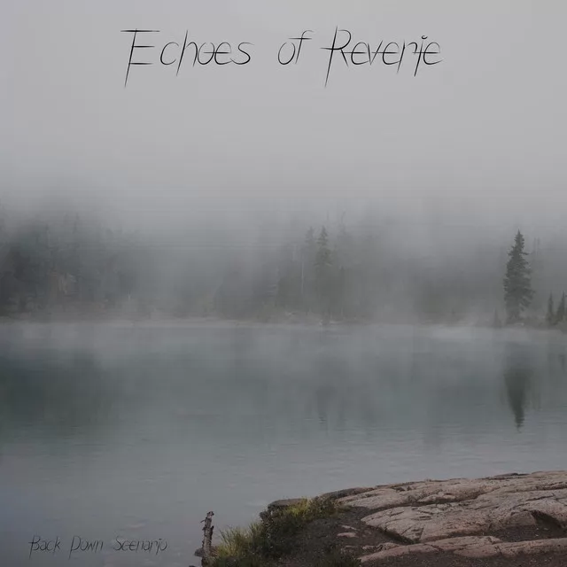

Echoes of Reverie
Emerging from a creative pause, Echoes of Reverie marks a contemplative new chapter for Back Down Scenario. This single invites listeners into a soundscape where time expands, and melodies unfold with deliberate grace, creating space for reflection and emotional resonance.
Building on the atmospheric foundation of Journey, this composition trades riffs for expansive, flowing arrangements. The track's unhurried pace allows each note to breathe, crafting an immersive experience that encourages listeners to lose themselves in its rich textures and evolving harmonies.
True to the project's diverse roots, Echoes of Reverie weaves together elements from Back Down Scenario's entire musical journey. The result is a piece that feels both familiar and fresh—a perfect reentry point that honors the past while looking forward to new creative horizons.